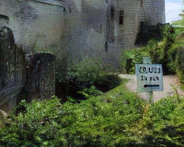
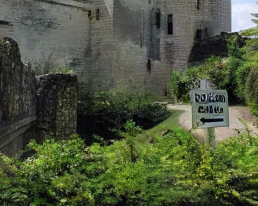
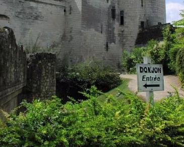
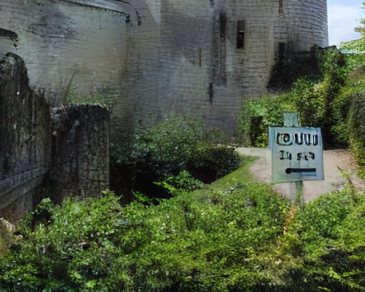
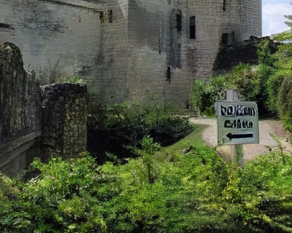
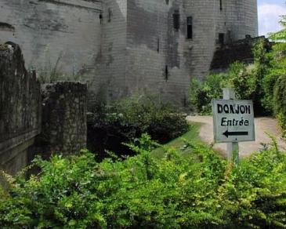
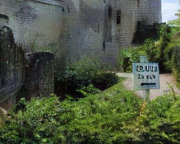
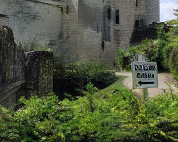
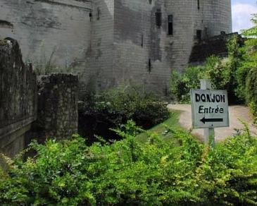

Results
 





Recent work on discrete generative priors, in the form of codebooks, has shown exciting performance for image reconstruction and restoration, as the discrete prior space spanned by the codebooks increases the robustness against diverse image degradations. Nevertheless, these methods require separate training of codebooks for different image categories, which limits their use to specific image categories only (e.g. face, architecture, etc.), and fail to handle arbitrary natural images. In this paper, we propose AdaCode for learning image-adaptive codebooks for class-agnostic image restoration. Instead of learning a single codebook for each image category, we learn a set of basis codebooks. Given an input image, AdaCode learns a weight map with and computes a weighted combination of these basis codebooks for adaptive image restoration. Intuitively, AdaCode is a more flexible and expressive discrete generative prior than previous work. Experimental results demonstrate that AdaCode achieves state-of-the-art performance on image reconstruction and restoration tasks, including image super-resolution and inpainting.



The training of AdaCode incorporates three stages:
1. Codebook Pretraining; 2. Representation Learning; 3. Restoration via AdaCode.
In the first stage, we divide our HQ dataset into multiple semantic subsets and train a class-specific VQGAN on each subset.
In the second stage, using the fixed pretrained class-specific codebooks as bases, we leverage a transformer block to generate weight maps and train the AdaCode through the self-reconstruction task.
In the last stage, we employ the AdaCode with fixed codebooks and fixed image decoder to address downstream restoration tasks, e.g. Super-Resolution and Image Inpainting.
@InProceedings{Liu_2023_ICCV,
author = {Liu, Kechun and Jiang, Yitong and Choi, Inchang and Gu, Jinwei},
title = {Learning Image-Adaptive Codebooks for Class-Agnostic Image Restoration},
booktitle = {Proceedings of the IEEE/CVF International Conference on Computer Vision (ICCV)},
month = {October},
year = {2023},
pages = {5373-5383}
}